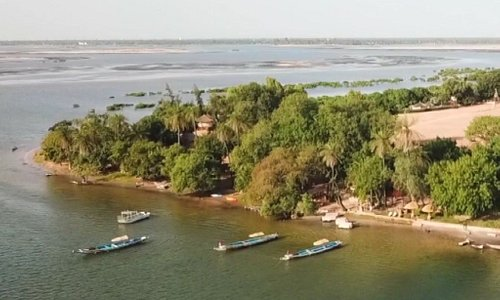
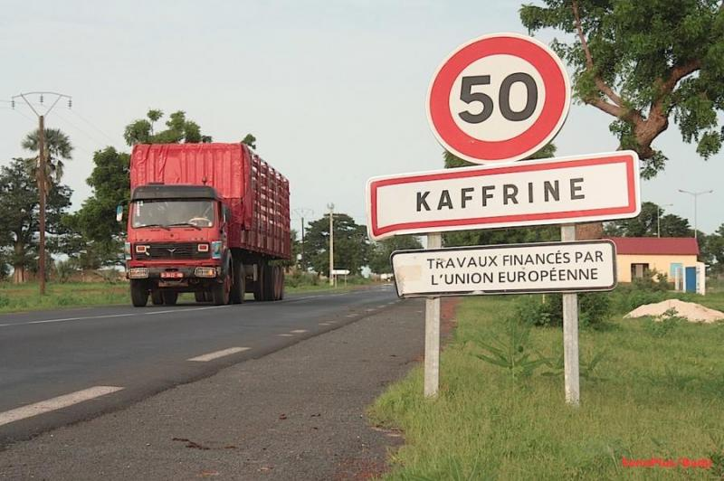
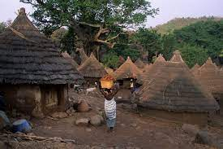
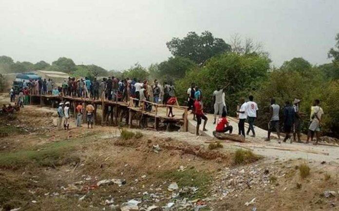
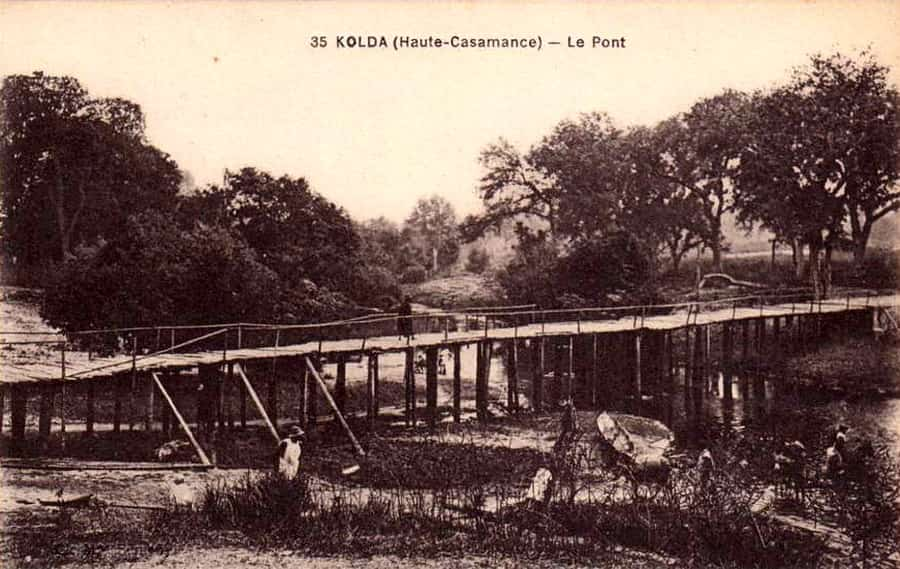
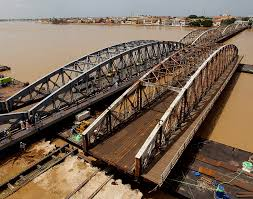
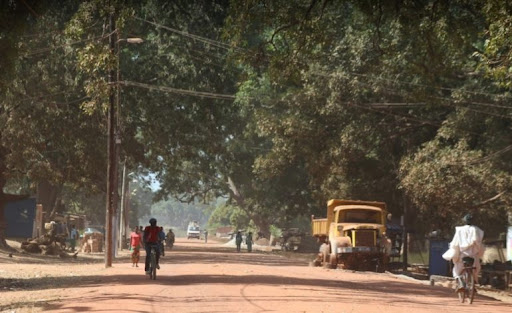
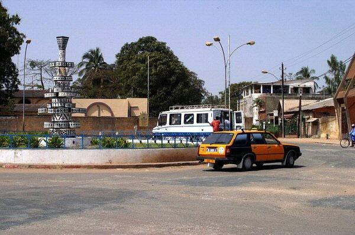

Tout connaitre sur le pays de la Téranga
Le Sénégal, en forme longue la république du Sénégal, est un État d'Afrique de l'Ouest. Il est bordé par l'océan Atlantique à l'ouest , la Mauritanie au nord-nord-est, le Mali à l'est-sud-est, la Guinée au sud-est et la Guinée-Bissau au sud-sud-ouest. La Gambie forme une quasi-enclave dans le Sénégal, pénétrant à plus de 302 km à l'intérieur des terres. Les îles du Cap-Vert sont situées à 560 km de la côte sénégalaise. Le pays doit son nom au fleuve qui le borde à l'est et au nord et qui prend sa source dans le Fouta-Djalon en Guinée. Le climat est tropical et sec avec deux saisons : la saison sèche et la saison des pluies. Le Sénégal fait partie de la Communauté économique des États de l'Afrique de l'Ouest (CEDEAO). Intégré aux principales instances de la communauté internationale, le Sénégal fait également partie de l'Union africaine (UA), de la Communauté des États sahélo-sahariens (CES), de l'Organisation internationale de la francophonie et de l'Organisation de la coopération islamique. Depuis le 2 avril 2012, le président du pays est Macky Sall.
Les 14 Régions du Sénégal et leur histoire
la Région de Dakar
 "
"
La ville de Dakar (en peul et wolof : Ndakaaru) est la capitale de la République du Sénégal et de la région de Dakar. Elle compte 1 056 0091 habitants sur les 3 630 000 habitants (estimation 20182) que compte l'ensemble de la région de Dakar. C'est une des quatre communes historiques du Sénégal et l'ancienne capitale de l'Afrique-Occidentale française (AOF). Sous la double action des apports migratoires depuis les campagnes et de l'accroissement naturel, la région de Dakar s'est très rapidement développée. Elle est ainsi passée de 400 000 habitants en 1970 à 3,6 millions d'habitants en 2018 soit une augmentation de près de 5% par an. Métropole macrocéphale, elle accueille la moitié de la population urbaine du pays. Sa situation à l'extrémité occidentale de l'Afrique, sur l'étroite presqu'île du Cap-Vert, a favorisé l'installation des premiers colons, puis le commerce avec le Nouveau Monde, et lui confère une position privilégiée à l'intersection des cultures africaines et européennes. Organisatrice du premier Festival mondial des Arts nègres voulu par le président Léopold Sédar Senghor en 1966, la ville est le siège de l'Institut fondamental d'Afrique noire et de la Banque centrale des États de l'Afrique de l'Ouest. N'occupant que 0,28 % du territoire national, la région de Dakar regroupe sur 550 km2, 25 % de la population et concentre 80 % des activités économiques du pays3
Histoire
Dakar ou encore la presqu’île du Cap-Vert a toujours été administrée par un gouvernement de la République lébou depuis 17938. D'ailleurs quand Protêt débarque à Dakar, il trouve sur place les lébous avec qui ils ont signé des accords. La République lébou qui existe toujours a fait face aux colons avec courage et détermination pendant des années. D'ailleurs, Matar Diop, grand serigne de Dakar, de 1815 a 1830 a refusé plusieurs fois des ordres venant du gouverneur de Gorée.
Géographie
Dakar est située à 167 km au nord-ouest de Banjul, à 408 km au sud-sud-ouest de Nouakchott, à 705 km au nord-ouest de Conakry et à 1 046 km à l'ouest-nord-ouest de Bamako. La cité se trouve sur un ancien volcan – aujourd'hui surmonté par le phare des Mamelles – qui aura donné, après une longue érosion, le promontoire rocheux de la presqu'île du Cap-Vert, l'île de Gorée au sud, les îles de la Madeleine à l'ouest et l'île de Ngor au nord. Du Plateau administratif aux faubourgs tentaculaires de Pikine et Guediawaye, le Grand Dakar s'étend sur la quasi-totalité de la presqu'île du Cap-Vert.
la Région de Diourbel
 "
"
Diourbel est une ville du Sénégal située à environ 150 kilomètres à l’est de Dakar. Le nom traditionnel de la ville est Ndiarem.
Histoire
La ville, ainsi que la région de Diourbel, fait partie du Baol. C'est la capitale historique du bassin arachidier, qui représente son industrie principale. À la suite de la diminution de la rentabilité de cette activité, et de la désertification croissante des campagnes, Diourbel est une ville en voie de paupérisation, la proximité de la ville de Touba— ville créée par le fondateur de la confrérie mouride— dont la croissance démographique peut avoir pesé sur la dynamique de Diourbel, qui représente désormais surtout une ville de passage pour de nombreux Sénégalais lors du pèlerinage dit du Magal.
Géographie
La ville est située à 146 km à l'est de la capitale Dakar1 et à 76 km de Thiès par la route nationale 3. Les localités les plus proches sont Sessene, Dangol, Garhane, Sous, Kankane, Ngoko et Tiebo.
la Région de Fatick
"Fatick est une ville de l'ouest du Sénégal, située entre M'bour et Kaolack.
Histoire
Sur la commune, plusieurs sites ont été classés Monuments historiques2. Il s'agit de Mind Ngo Mindiss, un site de libations et d’offrandes, situé sur le Sine ; Ndiobaye, un lieu de cérémonies traditionnelles ; Jab Ndeb, un arbre sacré situé à Ndiaye-Ndiaye ; les trois bâtiments abritant la Maison luthérienne, la préfecture et le tribunal.
Géographie
Les localités les plus proches sont Nerane, Poukham, Mbirk et Poukham Tok. Dakar, la capitale, se trouve à 155 km4.
la Région de Kaffrine
"Kaffrine est une ville du centre-ouest du Sénégal, située à environ 50 km de Kaolack.
Histoire
En 1967, les Postes du Sénégal ont émis un timbre dédié à la pierre lyre mégalithique de Kaffrine1.
Géographie
Kaffrine se trouve à 257 km à l'est de la capitale Dakar, par la route nationale 1 entre Kaolack et Tambacounda. Les localités les plus proches sont Toune, Ngam, Kilometre Six, Diogo, Djigui et Lougue.
la Région de Kaolack
Kaolack, chef-lieu de la région éponyme, est un port fluvial et l'une des plus grandes villes du Sénégal.
Histoire
La ville de Kaolack est une création coloniale qui a trouvé sur place le village de Ndagane aujourd'hui vieux quartier de la ville. Kaolack a été et est encore dans une grande mesure un centre important du transit de l'arachide, culture de rente du Sénégal. Autant dire que la ville a été durant longtemps l'une des plus importantes du Sénégal. Kaolack est aussi le chef-lieu du département et de la région de Kaolack. Kaolack est situé dans un royaume ancien qui s'appelait le Saloum. La ville a été bâtie dans un site caractérisé par une forte rétention de sel. Le bras de mer du Saloum est la cause de cette rétention et depuis longtemps une société spécialisée dans l'exploitation du sel détient le monopole dans la région. Marché à Kaolack Le royaume du Saloum, qui était assez réfractaire à la présence européenne, a cependant accepté sous la crainte d'une répression la construction du fort de Kaolack sous Pinet-Laprade. Le fort bâti près du bras de mer du Saloum était le cœur d'un territoire français au sein du royaume du Saloum. Lors des guerres de résistance des souverains locaux, Maba Diakhou Bâ, souverain musulman de Nioro du Rip (actuellement département de la région de Kaolack) et Lat-Dior Diop souverain du Cayor en exil, attaquèrent le fort de Kaolack. Kaolack fut donc un centre de transit important dans le commerce de l'arachide et du sel. La construction du chemin de fer a contribué a rapprocher cette ville du bassin arachidier.
Géographie
La ville est située à 192 km au sud-est de Dakar par la route nationale N 1, sur la rive droite du fleuve Saloum1 et une section autoroutière doublera cette itinéraire avec une mise en service vers 2023 / 2024. Écoliers de Kaolack en 2007 Un nœud de communications Les localités les plus proches sont Sibassor, Kahone, Mbadakhoune, Ndiaffate.
la Région de Kédougou
"Kédougou est la plus grande ville du sud-est du Sénégal, proche des frontières du Mali et de la Guinée. Kedougou a une chute d'eau de plus de 50 mètres, une forêt dense. La cascade est une merveille de la nature.
Histoire
Kédougou a été fondée par des Dioula Soninkes1 venus de Bakel. Son nom peut signifier "le pays de l'homme". Mais d'autre part l'étymologie est aussi attribué aux bedik maitres de la terre qui pour protéger la ville auraient enfoui (indugu en meunik) des gris-gris, c'est de ce mot que vient le nom de la région de Kédougou. Le tata de Bademba caractéristique du pays tenda est classé par les Monuments historiques2.
Géographie
Dakar, la capitale, se trouve à 702 km4. C'est une région où il y a beaucoup de collines.
la Région de Kolda
" "Kolda est une ville du Sénégal située en Haute-Casamance, au sud du pays, à proximité de la frontière avec la Guinée-Bissau. C'est le chef-lieu de la région et du département du même nom.
Histoire
Kolda tire son nom de son fondateur Koly Dado. Kolda a été déclaré comme région en 19831. Koly Dado est le nom du pêcheur sur le fleuve, à l'arrivée des blancs. Kolda comptait trois quartiers : doumassou,sikilo et bantaguel. Le chef de quartier de doumassou en ces temps s'appelait Gnanguiri Konaté. Kolda a été fondé par des bambara venant de Ségou, dirigeaient par Fodé Coulibaly.
Géographie
La ville est située sur la route nationale 6 – communément appelée « route du Sud »2 – qui relie Tambacounda à Ziguinchor. Dakar, la capitale, se trouve à 670 km3. Les localités les plus proches sont notamment Gaide, Sikilo, Faraba, Faramba et Sisal4.
la Région de Louga
Louga (parfois Luga) est le chef-lieu du département de Louga dans la région de Louga au nord-ouest du Sénégal. Importante capitale régionale, la ville est l'une des plus importantes agglomérations du pays et l'un de ses centres économiques.
Hstoire
Les origines du village sont controversées. Le 15 septembre 1869, Lat Dior mobilise ses troupes et attaque les français à Louga. Il va subir d’énormes pertes avant de se retirer. On dénombre 600 hommes tués et 150 chevaux du côté de Lat-Dior contre 21 hommes du côté de l’armée coloniale. Cette bataille de Louga constitue l’une des plus grandes déroute du Damel du Cayor. Louga s'est rapidement agrandie et développée, notamment grâce au fort militaire édifié en 1883 par les autorités coloniales françaises pour pacifier la contrée menacée par les Tiédos (guerriers). Par la suite, Louga est promue chef-lieu de province et rattachée à la colonie française. Très vite, la bourgade attire les populations musulmanes éprouvées par les exactions des Tiédos. En 1887, Louga comptait un millier d'habitants, s'adonnant à l'agriculture, à l'élevage et au commerce. À la fin du xixe siècle, Louga commence à prendre les traits d'un centre urbain et à jouer un rôle dans la vie économique et sociale du terroir dénommé Ndiambour. Le 18 janvier 1887, Louga est érigée en cercle. Ce changement de statut permet une réorganisation de la ville pour faire face aux défis qui l'attendent. Ainsi, un premier lotissement est construit en 1894. Louga ressemble désormais à bien d'autres villes coloniales, avec un centre-ville disposant de toutes les infrastructures et des quartiers périphériques totalement démunis. Au début de l'année 1900, Louga connaît un développement considérable avec l'implantation du Marbath, ou marché à bétail. Dans le Santhiaba, quartier ouest de la ligne de chemin de fer du Dakar-Niger, un autre lotissement est construit en 1901, ce qui lui vaut une promotion en commune mixte en 1905. L'accession du Sénégal à l'indépendance renforce le développement de cette ville dont la population croît rapidement. Les réformes administratives qui se sont succédé depuis la période coloniale ont ainsi fait passer la ville de Louga des statuts de chef-lieu de province, de cercle, de commune mixte au statut de commune. Le périmètre communal actuel qui couvre une superficie de 1 800 hectares a été défini par arrêté n° 7840 du 2 novembre 1954. Il s'est considérablement élargi à la suite des nombreux lotissements consécutifs, aux installations massives des populations. Les extensions urbaines ont franchi la limite du terrain communal entraînant un empiètement sur les terrains des villages environnants. Aujourd'hui, le périmètre communal projeté s'étend sur une superficie d'environ 3 035,25 hectares, soit une extension de 75 %.
Géographie
Les localités les plus proches sont Dagadj, Bayakh, Taoua, Laye, Mbarom et Ngueye Dili. Dakar, la capitale, se trouve à 203 km. La ville s'étend sur une vaste plaine sableuse. Elle jouit d'un climat sahélien sec presque désertique, d'une végétation steppique caractérisés par une saison des pluies courte et instable et une longue saison sèche de neuf mois ou plus. L'harmattan, chaud et sec, très actif de janvier à mai, constitue le vent dominant de cette zone. Il transporte de la poussière qui provoque parfois de véritables tempêtes de sable, et surtout, il favorise l'érosion éolienne ainsi que la perte d'eau par évaporation. Bâtie à la croisée des routes caravanières marchandes venant d'Afrique du Nord et des grands axes de pénétration coloniale, Louga a toujours été au centre des évènements qui ont jalonné et marqué le cours de l'histoire du Sénégal. Aujourd'hui, elle est confrontée à une conjoncture économique difficile, à une désertification, un ensablement et une sécheresse persistants.
la Région de Matam
Matam est un toponyme et un patronyme pouvant désigner les personnes et lieux suivants.
la Région de Saint-Louis
"Saint-Louis, Ndar en wolof, souvent appelée « Saint-Louis-du-Sénégal », est l'une des plus grandes villes du Sénégal et, historiquement, l'une des plus importantes, comme en témoigne son inscription sur la liste du patrimoine mondial de l'UNESCO. C'était une des quatre communes (« Quatre Vieilles ») historiques du Sénégal à statut de département français.
Hstoire
Saint-Louis fut la première ville fondée par les Européens en Afrique occidentale en 16592. Établie par des marins de Dieppe (Normandie) sur l'île homonyme du fleuve Sénégal, longue de 2 km et large de 300 m, elle fut baptisée ainsi en l'honneur du roi de France régnant Louis XIV, au travers de son ancêtre et homonyme Saint Louis. En 1689, le religieux français Jean-Baptiste Gaby dans un récit de voyage en Nigritie présente l'île et les rives du fleuve « Senega » comme encore en partie couverte de mangroves à palétuviers3. La ville fut un très important centre du commerce de l'or, de la gomme arabique, de l'ivoire et des esclaves. Dès la Révolution Française, ses habitants eurent un statut de citoyenneté devenant citoyens français. De 1793 à 1816, la ville de Saint-Louis, ainsi que toute la cote maritime du Sénégal sont occupés par les Britanniques, à la suite de l'exécution de Louis XVI. Au traité de Vienne, en 1815, le Sénégal est rendu aux Français, sauf la Gambie, qui deviendra une colonie Britannique en 1815. Centre-ville de Saint-Louis en 1910 Le 2 juillet 1816, La Méduse, frégate de trois mâts transportant à Saint-Louis le nouveau gouverneur du Sénégal Julien Schmaltz, avec 400 personnes à bord, fait naufrage sur les côtes de Mauritanie, s'échouant dans les sables du banc d'Arguin, au nord de Saint-Louis. Cet épisode fut immortalisé par le peintre Théodore Géricault dans le radeau de la Méduse (Musée du Louvre). Pierre Loti habita au « 32 rue Mage » où il écrivit Roman d'un spahi. La route de Sor et la gare primitive vers 1902 Elle devient la capitale politique de la colonie française et de l'Afrique-Occidentale française, jusqu'en 1902, puis capitale du Sénégal et de la Mauritanie. Le statut des quatre communes leur accorde des droits spécifiques en 1872. Le 12 mai 1930, l'aviateur français Jean Mermoz part de Saint-Louis-du-Sénégal afin de réaliser la première liaison postale transatlantique sans escale qui le mène jusqu'à Natal au Brésil. Le succès de ce vol permet à l'aéropostale d'établir de manière définitive une liaison aérienne régulière entre Toulouse et Santiago du Chili. Elle reste un comptoir de commerce français important jusqu'en 1957. En 1959, des militants du Parti africain de l'indépendance tentent une insurrection pour obtenir l'indépendance du Sénégal4.
Géographie
Saint-Louis se trouve à l'embouchure du fleuve Sénégal, à 264 km1 au nord de la capitale du pays, Dakar, près de la frontière avec la Mauritanie. Du fait de cette situation géographique, au moment de la création du comptoir français, elle est simplement appelée « Île du Sénégal », puis « colonie du Sénégal » ; ce nom sera étendu à l'ensemble du Sénégal actuel après les annexions qui font suite à la conférence de Berlin. La République du Sénégal reprendra à son tour le nom du fleuve lors de son indépendance en 1960.
la Région de Sédhiou
"Sédhiou (ou Seju), chef-lieu de l'une des 14 régions du Sénégal depuis 2008, est une ville de Casamance, située sur la rive droite du fleuve Casamance.
Histoire
Sédhiou est, historiquement, un haut lieu de la culture mandingue, mais un brassage de populations s'est effectué dans l'intervalle. Au xixe siècle, Sédhiou est instauré en 1861 comme l'un des sept chef-lieu d'arrondissement de la Colonie du Sénégal et dépendances2 jusqu'à la réforme de 1863 qui inscrit le cercle de Sédhiou dans l'arrondissement de Gorée3. La localité devient chef-lieu de la circonscription de Casamance en 1883, Sédhiou est alors la capitale de la Casamance jusqu'au début du xxe siècle, le transfert de la capitale à Ziguinchor du fait de sa meilleure position géographique intervient en 1906. La commune de Sédhiou est créée en février 19604.
Géographie
La ville est située à 382 km au sud-est de Dakar, par la route le trajet inclut la traversée du fleuve Gambie par le Pont Sénégambie qui depuis 2019 a remplacé le ferry1. Les localités les plus proches sont Badiandian, Bakoum, Bissary Diounkouya,Sandinier, Kerel, Malandiankounda, Badjimor, Banhar et Goudiabiya.
la Région de Tambacounda
"Tambacounda est la plus grande ville du Sénégal oriental, dont elle est la capitale administrative.
Histoire
À l'origine la ville était un campement mandingue, faisant partie du royaume du Boundou. Le nom Tambanding Oualy. Tambacounda signifie «la maison de Tamba». On y trouve quelques vestiges de l'époque coloniale. En 2003, la gare ferroviaire, l'hôtel de la Gare et le bâtiment de la préfecture ont été inscrits sur la liste des Monuments historiques2. En juillet 2014, Mame Balla Lô, succédant à Oury Bâ (2009-2014), devient officiellement le sixième maire de la commune de Tambacounda3.
Géographie
Les localités les plus proches sont Madina Maboule, Koukari, Yoro Sankoule, Bira, Dialakoto, Sambadian, Djidje Kounda, Botou et Kanderi Niana. Dakar, la capitale, se trouve à 467 km1. Le climat est de type sahélien et la chaleur peut parfois être éprouvante.
la Région de Thiès
Thiès, chef-lieu de la région éponyme, est l'une des plus grandes villes du Sénégal. Elle est située à 70 km à l'est de Dakar. Fondée il y a plus de 100 ans, son développement correspond à l’implantation de l’Escale et à la Création de la ligne de chemin de fer de Dakar-Bamako. La création de comptoirs commerciaux et d’ateliers de réparation de la régie des chemins de fer a été un facteur déterminant dans la croissance de la « capitale du rail »2.
Histoire
Dianxène était un village sérère fondé au xviie siècle dans le royaume de Cayor et qui ne comptait que 75 habitants en 1860. Une mission avec un village est fondée par les spiritains à la fin du XIXe siècle afin de protéger les populations locales de l'esclavage maure4. L'administration coloniale française crée la commune de Thiès en 1904. Léopold Sédar Senghor a présidé le premier conseil municipal, et est élu maire en 1956. Sur la ligne de chemin de fer de Dakar au Niger, la ville de Thiès participe aux grèves générales sénégalaises de 1945-1946 et de 1947-1948.
Géographie
Thiès est située sur la ligne du chemin de fer Dakar-Niger. Son territoire est ceinturé par la commune de Fandéne d’Est en Ouest, du nord au Sud avec une petite ouverture sur celle de Keur Moussa au Nord Est5. Aujourd'hui, sa surface est engloutie par les communautés rurales de Fandéne et Keur Moussa, la forêt classée de Thiès étant à cheval entre les trois collectivités locales. Malgré ces contraintes, la ville continue de s’élargir et empiète sur les périmètres des communautés rurales riveraines.[réf. nécessaire]
la Région de Ziguinchor
"Ziguinchor est une ville de 205 294 habitants en 2013 (aire urbaine, 2018 : 289 904 habitants) du sud du Sénégal, chef-lieu du département de Ziguinchor de la région de Ziguinchor et de la région historique de la Casamance.
Histoire
La ville a été fondée à côté des villages Baïnouks et Diolas environnants en 1645 par les Portugais avant d’être cédée le 22 avril 1886 à la France qui en fit un important comptoir commercial2. Elle devint prospère entre autres grâce au commerce de l'arachide. Le nom de la ville vient du portugais « chegem e chorei », ce qui signifie « je suis venu et ils ont pleuré », allusion aux habitants de la ville qui commencèrent à pleurer en voyant les Portugais arriver, pensant qu'ils allaient devenir des esclaves. Dès lors la région fut petit à petit convertie au christianisme. Après la Seconde Guerre mondiale, Ziguinchor a vu son essor ralenti, entre autres à cause des troubles frontaliers avec la Guinée-Bissau alors dictature alliée de l'Union des républiques socialistes soviétiques (URSS). Dans les années 1960, il n'était pas rare d'entendre depuis Ziguinchor des coups de canons provenant des affrontements entre les forces coloniales portugaises et les combattants du PAIGC (parti africain pour l'indépendance de la Guinée Bissau). À ce moment-là, Ziguinchor exportait vers Dakar et l'Europe des arachides et des crevettes. Chef-lieu d'une région à forte présence chrétienne dans un pays majoritairement musulman, de plus séparée du nord du Sénégal par l'enclave de la Gambie, Ziguinchor fut un peu délaissée et connut des troubles politiques sérieux dans les années 1980. Dans les années 1960 les Français résidant a Ziguinchor appréciaient particulièrement la plage du cap Skirring pour aller y passer les week-ends en passant par la piste obligée et poussiéreuse (2 h de route) ainsi que par les bacs (aléatoires) d'Essoukoudiak et de Niambalang. Ils y avaient construit au bord de l'eau de modestes bungalows et même des tentes pour y habiter quelques jours (confort spartiate) appréciant cette plage pour ses baignades en famille et sa pêche. Pour rejoindre plus rapidement le cap Skirring, une piste d'atterrissage a alors été construite par les membres de l'aéroclub de Casamance (basé à Ziguinchor) avec l'aide de l'armée française (amirauté à Dakar) qui prêta gracieusement un bateau à fond plat (LTC) permettant d'acheminer sur la plage les bulldozers depuis Z'Chor (c'est ainsi qu'on écrivait alors Ziguinchor). Cette piste d'atterrissage, d'abord en terre battue, a été par la suite rallongée puis bétonnée afin d'y recevoir les jets. Depuis, le cap Skirring est connu et nombreux sont les touristes qui y viennent depuis l'Europe, dont ceux du Club Méditerranée.
Géographie
La ville de Ziguinchor se situe dans le sud-ouest du Sénégal au bord de la Casamance à environ 70 km de l'océan Atlantique. Elle est reliée par route, par bateau et par avion à Dakar, la capitale, distante de 454 km1. Jusqu'au milieu des années 1970, pour traverser la Casamance vers le nord, il y avait un bac. En 1974, un pont de 650 m de long a été construit au-dessus du fleuve, à l'est de la ville. Il a fait au début des années 2010 l'objet d'une importante réhabilitation, terminée en janvier 2014. Comme toute la région, la ville est située à une altitude assez faible, de 12 mètres environ, ce qui donne un dénivelé moyen jusqu'à l'océan d'environ 17 centimètres par kilomètre.